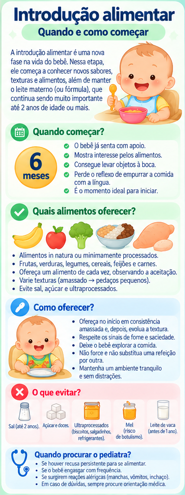

Introdução alimentar: quando e como começar
Aos 6 meses, a criança passa a precisar de outros alimentos além do leite materno. É uma fase de descoberta de sabores, texturas e habilidades — sem abandonar o leite materno.
Quando começar
Para crianças em geral, a alimentação complementar começa aos 6 meses. O leite materno continua importante e pode ser mantido até 2 anos ou mais.
O que oferecer
Priorize alimentos in natura ou minimamente processados: frutas, legumes, verduras, feijões, cereais, raízes e tubérculos, carnes e ovos, conforme a rotina da família.
Ofereça água própria para consumo. O Ministério da Saúde recomenda não oferecer açúcar antes dos 2 anos e evitar ultraprocessados.
Textura e autonomia
No início, a comida pode ser amassada com garfo e deve evoluir gradualmente em consistência. Não é necessário liquidificar ou peneirar rotineiramente. A refeição deve ser um momento positivo, respeitando sinais de fome e saciedade.
Segurança e avaliação individual
A criança deve comer sentada e supervisionada. Formato e textura dos alimentos precisam ser adequados ao desenvolvimento para reduzir risco de engasgo.
Prematuridade, alterações do desenvolvimento, dificuldade para engolir, alergias ou condições clínicas podem exigir orientação individualizada.
Dúvidas frequentes
Suco substitui água ou fruta?
Para a rotina, prefira água e a fruta em sua forma habitual, em vez de bebidas açucaradas.
Preciso obrigar a criança a terminar o prato?
Não. A orientação oficial é observar e respeitar os sinais de fome e saciedade.
Infográfico

Fontes e revisão
- Ministério da Saúde. “Alimentação saudável” — Saúde da Criança / Primeira Infância.
- Ministério da Saúde. Guia Alimentar para Crianças Brasileiras Menores de 2 Anos, versão resumida/reimpressa.
Última revisão: 25 de setembro de 2026.